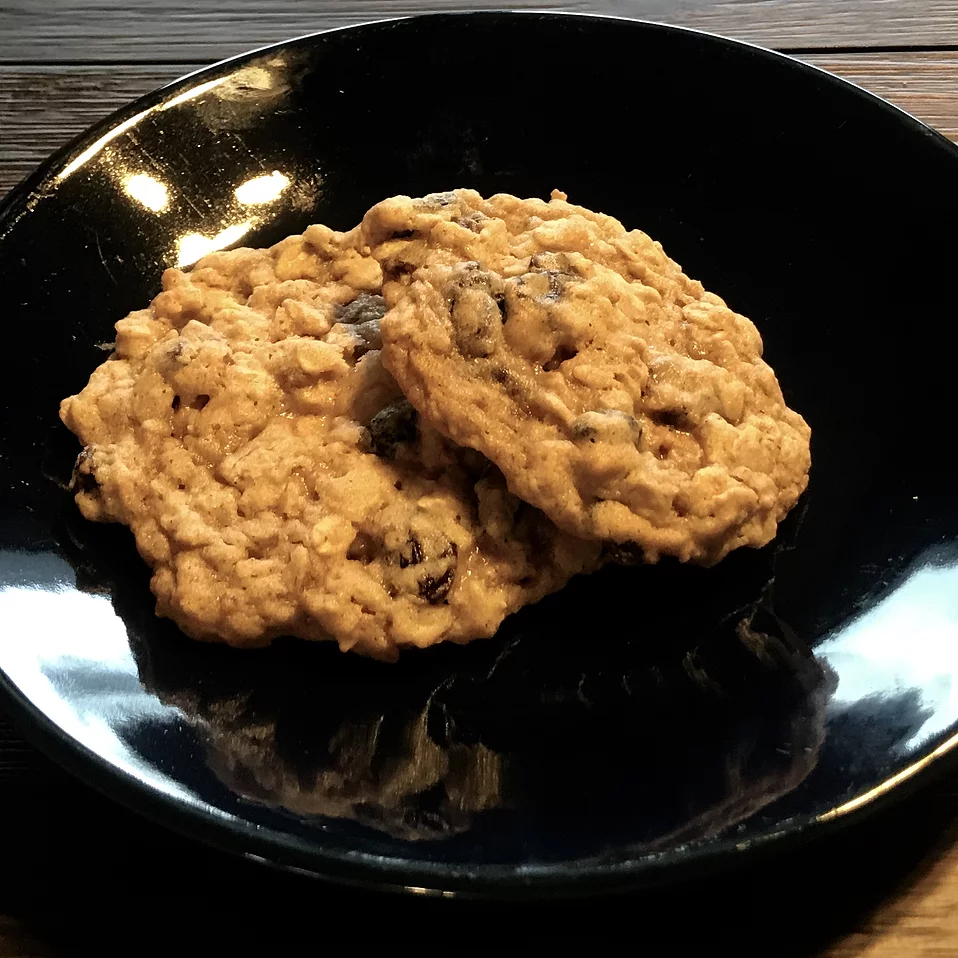

Oatmeal Raisin Cookies

An old stand-by that the whole family loves.
Ingredients:
- ¾ cup butter, softened
- ¾ cup white sugar
- ¾ cup packed light brown sugar
- 2 eggs
- 1 teaspoon vanilla extract
- 1 ¼ cups all-purpose flour
- 1 teaspoon baking soda
- ¾ teaspoon ground cinnamon
- ½ teaspoon salt
- 2 ¾ cups rolled oats
- 1 cup raisins
Steps:
- Preheat oven to 375 degrees F (190 degrees C).
- In large bowl, cream together butter, white sugar
, and brown sugar until smooth. Beat in the eggs and
vanilla until fluffy. Stir together flour, baking soda
, cinnamon, and salt. Gradually beat into butter mixture.
Stir in oats and raisins. Drop by teaspoonfuls onto
ungreased cookie sheets.
- Bake 8 to 10 minutes in the preheated oven
, or until golden brown. Cool slightly, remove from
sheet to wire rack. Cool completely.
Return to main page